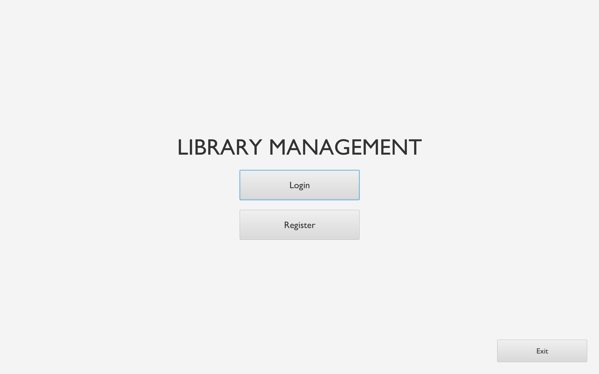
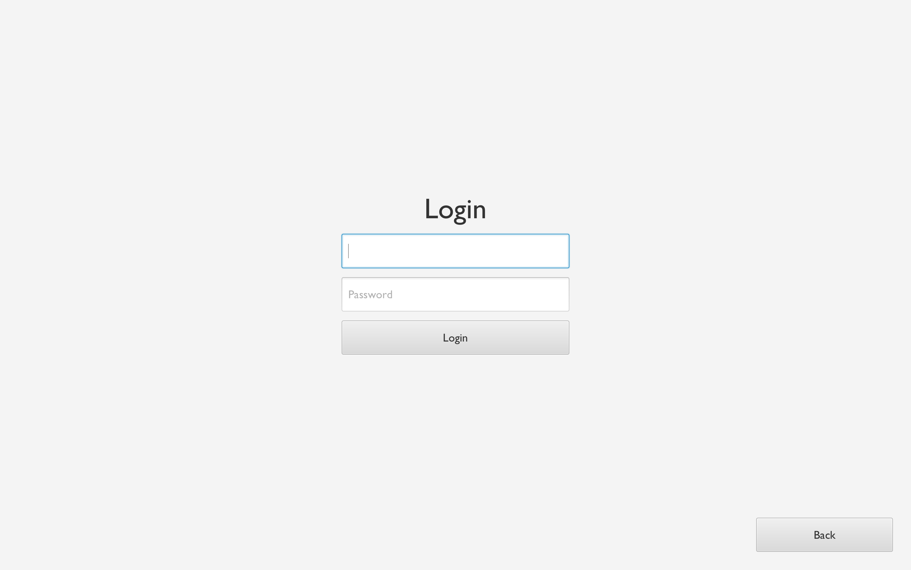
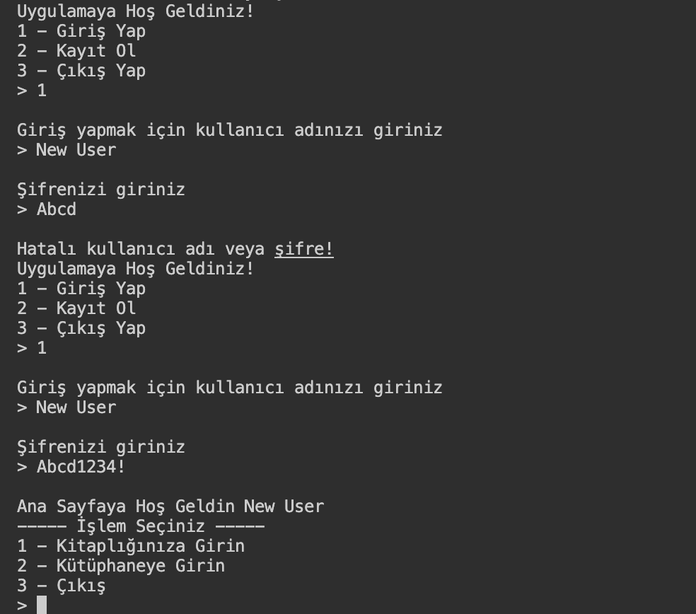
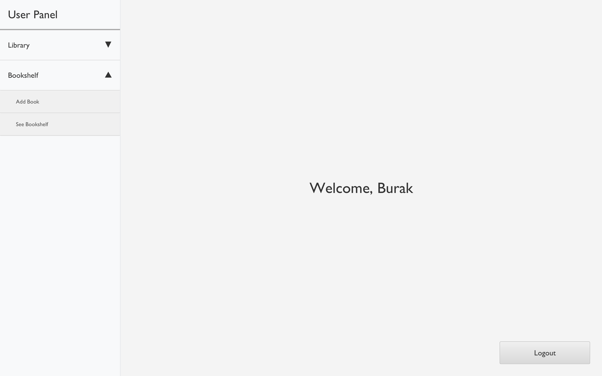
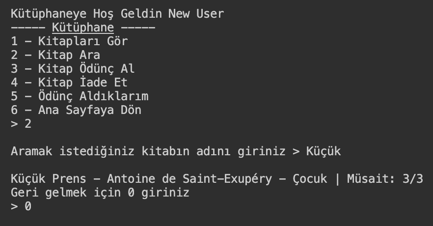
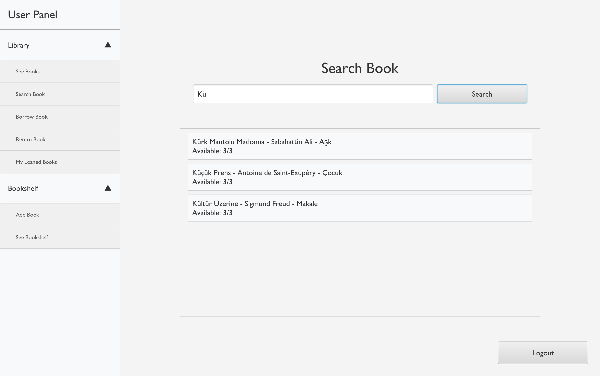
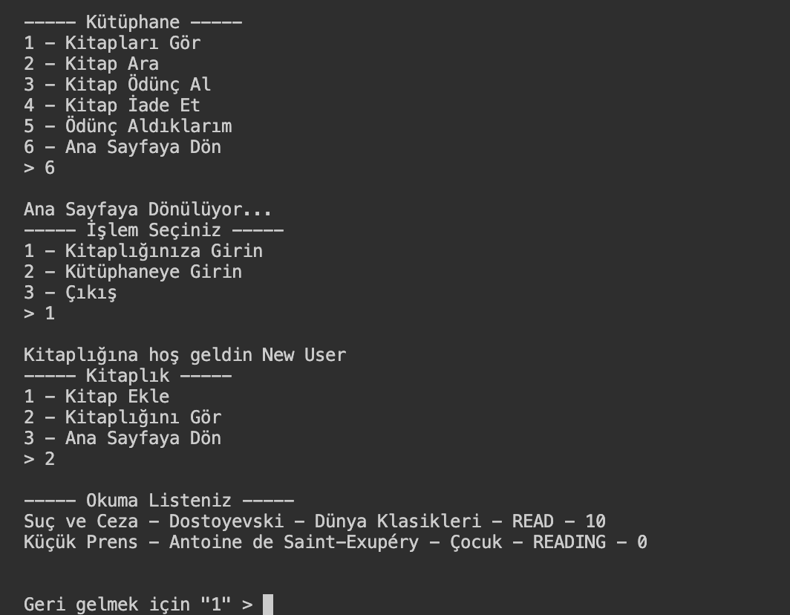
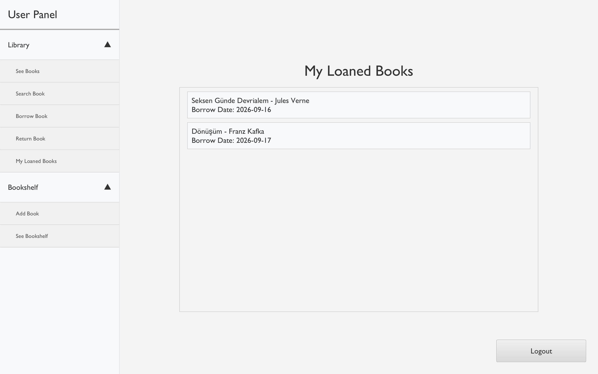

Kişisel kitaplık (raf) yönetimini ortak kütüphane, kopya takibi, ödünç alma mekanizması ve admin paneliyle harmanlayan konsol tabanlı otomasyon sistemi.
A console-based automation system that blends personal library (shelf) management with a shared library, copy tracking, borrowing mechanics, and an admin panel.
Çıkış Noktası ve Kapsam
Starting Point and Scope
Bu proje başlangıçta kullanıcıların okudukları kitapları not edip saklayabileceği kişisel bir "kitaplık/raf" uygulaması olarak tasarlandı. Zamanla kapsamı genişletilerek mevcut kod yapısı silinmeden tam teşekküllü bir **Kütüphane Sistemine** dönüştürüldü. Artık kullanıcılar sadece kendi raflarını yönetmekle kalmıyor; merkezi kütüphaneden kitap aratabiliyor, kopya sayılarıyla birlikte kitap ödünç alabiliyor ve ödünç alınan bu kitaplar otomatik olarak kişisel raflarına "Okunuyor" statüsüyle ekleniyor.
This project was initially designed as a personal "bookshelf" application where users could note and store books they read. Over time, its scope was expanded and transformed into a full-fledged **Library System** without discarding the existing code structure. Users can now not only manage their own shelves but also search for books in the central library, borrow books with copy counts, and have these borrowed books automatically added to their personal shelves with a "Reading" status.
Hibrit Raf Sistemi
Hybrid Shelf System
Kişisel not edilen kitaplar ile merkezi kütüphaneden gelen ödünç kitapların ortak yönetimi.
Joint management of personally noted books and borrowed books from the central library.
Ödünç Alma Entegrasyonu
Borrowing Integration
Kütüphaneden ödünç alınan kitabın doğrudan kullanıcının rafına aktarılması ve durum takibi.
Direct transfer of borrowed books to the user's shelf and status tracking.
Admin & Yetkilendirme
Admin & Authorization
Kütüphane stoklarını, kitap kopya sayılarını ve kullanıcı işlemlerini yöneten admin paneli.
An admin panel managing library stocks, book copy counts, and user operations.
JSON Kalıcılığı
JSON Persistence
Harici sunucu gerektirmeyen, otomatik dosya oluşturan JSON tabanlı güvenli veri saklama.
Secure JSON-based data storage that creates files automatically without external servers.
Teknik Altyapı ve Sınıf Mimarisi
Tech Infrastructure & Class Architecture
OOP Prensipleri
OOP Principles
Sistem; Library, User ve Book sınıfları arasında sıkı sorumluluk ayrımı (separation of concerns) gözetilerek tasarlandı.
The system was designed with strict separation of concerns among Library, User, and Book classes.
JSON Veri Yönetimi
JSON Data Management
Harici json.jar kütüphanesi kullanılarak kullanıcı verileri ve kitap envanteri kalıcı olarak diske kaydedilir ve okunur.
User data and book inventory are persistently saved and read from disk using the external json.jar library.
Güvenlik & Doğrulama
Security & Authentication
Kullanıcı kayıt mekanizması, güvenli giriş (secure login) ve özel parola kısıtlamalarıyla desteklenmiştir.
Supported by user registration mechanics, secure login, and custom password constraints.








Mimari Kararlar ve Zorluklar
Architectural Decisions & Challenges
Mevcut Kodu Korumak (Refactoring): Uygulamayı sıfırdan yazmak yerine, eski "Kişisel Raf" yapısını bozmadan üstüne "Merkezi Kütüphane ve Admin" katmanını entegre etmek OOP kalıtım ve kapsülleme (encapsulation) mantığını test etmek adına harika bir pratik oldu.
Kopya Sayısı Senkronizasyonu: Bir kullanıcı kütüphaneden kitap ödünç aldığında kütüphanedeki stok (copy count) miktarının güvenli bir şekilde azalması ve bu değişikliğin anlık olarak JSON dosyasına yansıtılması veri tutarlılığı açısından kritik bir süreçti.
Preserving Existing Code (Refactoring): Instead of rewriting from scratch, integrating the "Central Library and Admin" layer over the old "Personal Shelf" structure without breaking it was a great practice to test OOP inheritance and encapsulation logic.
Copy Count Synchronization: When a user borrows a book, safely decrementing the library stock (copy count) and reflecting this change instantly in the JSON file was a critical process for data consistency.
Kurulum ve Çalıştırma
Installation and Execution
bash
# macOS / Linux için Derleme ve Çalıştırma
javac -cp ".:lib/json.jar" Codes/*.java
java -cp ".:lib/json.jar:Codes" MainLibrary
# Windows için Derleme ve Çalıştırma
javac -cp ".;lib/json.jar" Codes\*.java
java -cp ".;lib/json.jar;Codes" MainLibrary
# Compile and Run for macOS / Linux
javac -cp ".:lib/json.jar" Codes/*.java
java -cp ".:lib/json.jar:Codes" MainLibrary
# Compile and Run for Windows
javac -cp ".;lib/json.jar" Codes\*.java
java -cp ".;lib/json.jar;Codes" MainLibrary